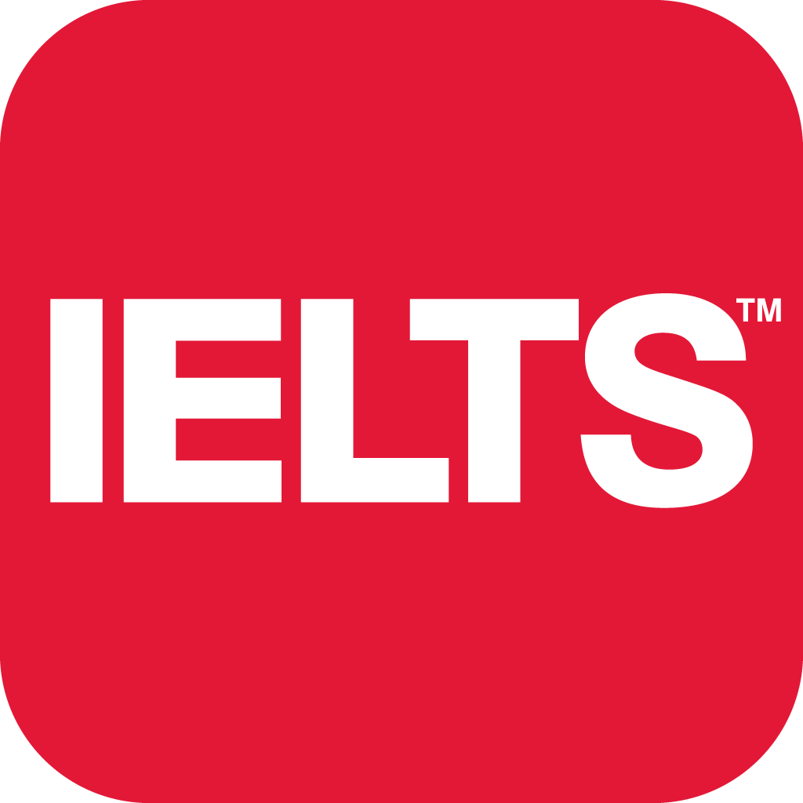

Colourful Career Centre
 (1).png)
CCC 2015 ci ildə yaradıldı
“Colourful Career Centre” Xarici Təcrübələrə əsaslanaraq Bakıda yaradılmış Karyera Mərkəzidir.
Mərkəzdə Bütün Tələbələr və Gənclər üçün nəzərdə tutulmuş Xüsusi Karyera İnkişaf proqramları əhatə olunur.
İnkişaf və Uğurlu Gələcək üçün Karyera İnkişaf Proqramlarının Hərəkət verici və köməkçi sahələri aşağıdakılardır.
“Rus dili Dərsləri”
– Hər bir kəsə məlumdur ki , Daha geniş auditoriyalara çıxmaq və Yüksək keyfiyyətdə nəşr olunmuş məlumatları, kitabları oxumaq üçün Rus dili biliyi önəmlidir.
Rus dilini öyrənərkən isə təsadüfi müəllim və ya kurs seçməkdənsə Rus dilini öyrənəcəyiniz yerlə və müəllimlə əvvəlcədən tanış olmaq, müəllimlə Rus dilini öyrənmək istədiyiniz istiqamətdə məsləhətləşmək lazımdır.
Mərkəzimiz Rus dilini öyrənmək istəyən Hər Bir Kəs üçün Təklif edir.Dərslər Həm Tələbələr , həm də iş adamları üçün nəzərdə tutulub.
Həftədə 2 dəfə hərəsi 90 dəqiqə olmaqla keçirilən Rus dili Dərsləri
- İnteraktiv
- Maraqlı
- İntensiv
Tədris Proqramı aşağıdakı kimidir:
“0”-dan başlayanlar İlk olaraq A1 səviyyəsini 1 aya Yekunlaşdırır.(Baza cümlələr və söz bazası)
A2 səviyyəsi 1 ay yarıma yekunlaşır. ( Aktiv söz bazasının genişlənir və gündəlik işlək cümlələr qurulur)
A3 səviyyəsi 2 ay davam edir. ( Danışıq üçün lazım olan qrammatik baza formalaşır, Söz bazası gündəlik işlək söz bazasını əhatələyir)
A4 səviyyəsi 2 ay yarım davam edir. ( Düzgün və sürətli danışıq formalaşır, Söz bazası bütün mövzularda müzakirə aparacaq səviyyəyə qədər artır)
Keyfiyyətin yoxlanılması və Əldə olunan nəticələri müqayisə etmək üçün Hər 2 həftədən bir Öyrənilənlərin yoxlanılması üçün İmtahan günləri təşkil olunur.
Dərslər 3-4 nəfərlik qruplarda keçirilir, aylıq Ödəniş 65 azn dir.
Ödənişə daxildir:
- Kitabxanadan Pulsuz İstifadə
- Həftəsonu keçirilən Danışıq Klublarında iştirak
- Karyera inkişaf proqramları və digər tədbirlərdə PULSUZ və ya Endirimli iştirak
- 1ci ayın İlk Dərs kitabından faydalanmaq
- Rus dilli iş adamları , Karyerasında Uğur qazanmış insanlar və aktiv Gənclərlə görüş
“İngilis dili Dərsləri”
- İnkişafda olan bir ölkənin vətəndaşları üçün Ən önəmli dillərdən biri də İngilis dilidir, Xüsusilə Daha Yüksək gəlir əldə etmək istəyən və Daha Uğurlu Karyera qurmaq istəyən Şəxslər üçün İngilis dili əvəzsizdir.
Əldə etmək istədiyiniz bütün məlumatları dil məhdudiyyəti olmadan oxumaq üçün İngilis dilinizi gündəlik işlək dil səviyyəsinə çatdırmaq lazımdır. Xaricdə Təhsil almaq və ya Xaricdəki vakansiyalara müraciət etmək üçün İngilis dili biliyini inkişaf etdirmək istəyən Hər Kəsə İngilis dili dərslərimizi təklif edirik.
Həftədə 2 dəfə hərəsi 90 dəqiqə olmaqla keçirilən İngilis dili Dərsləri
- İnteraktiv
- Maraqlı
- İntensiv
Tədris Proqramı aşağıdakı kimidir:
“0”-dan başlayanlar İlk olaraq “Starter” səviyyəsini 1 aya Yekunlaşdırır.(Baza cümlələr və söz bazası)
“Elementary” səviyyəsi 1 ay yarıma yekunlaşır. ( Aktiv söz bazasının genişlənir və gündəlik işlək cümlələr qurulur)
“Pre- Intermediate” səviyyəsi 2 ay davam edir. ( Danışıq üçün lazım olan qrammatik baza formalaşır, Söz bazası gündəlik işlək söz bazasını əhatələyir)
“Intermediate”səviyyəsi 2 ay yarım davam edir. ( Düzgün və sürətli danışıq formalaşır, Söz bazası bütün mövzularda müzakirə aparacaq səviyyəyə qədər artır)
Keyfiyyətin yoxlanılması və Əldə olunan nəticələri müqayisə etmək üçün Hər 2 həftədən bir Öyrənilənlərin yoxlanılması üçün İmtahan günləri təşkil olunur.
Dərslər 3-4 nəfərlik qruplarda keçirilir, aylıq Ödəniş 75 azn dir.
Ödənişə daxildir:
- Kitabxanadan Pulsuz İstifadə
- Həftəsonu keçirilən Danışıq Klublarında iştirak
- Karyera inkişaf proqramları və digər tədbirlərdə PULSUZ və ya Endirimli iştirak
- 1ci ayın İlk Dərs kitabından faydalanmaq
- Bakıda işləyən və ya oxuyan İngilis dilli vətəndaşlarla görüşlərdə iştirak

“IELTS” – Yerli və ya Xarici universitetlərə qəbul , eləcə də Xarici şirkətlərdə işləmək üçün lazım olan İngilis dili programı Sertifikatıdır. Beynəlxalq Sertifikat olub, Əksər ölkələrdə keçərlidir.
İELTS daha geniş imkanlar, şanslar yaradır.
Mərkəzimizin Təklif etdiyi İELTS Dərslərinin müddəti qavrama səviyyəsindən və əldə etmək istədiyi Baldan asılı olaraq 3-5 ay müddətində dəyişir.Dərslər interaktiv və Xaricdə Təhsil almış Mütəxəssislər tərəfindən keçirilir.
Listening, Writing, Reading, Speaking bacarıqları pararlel şəkildə öyrədilir. İştirakçının zəif tərəflərinə daha çox diqqət edilir və inkişaf etdirilir.
Keyfiyyətin yoxlanılması və Əldə olunan nəticələri müqayisə etmək üçün Hər 2 həftədən bir Öyrənilənlərin yoxlanılması üçün İmtahan günləri təşkil olunur.
Dərslər 3-4 nəfərlik qruplarda keçirilir, aylıq Ödəniş 95 azn dir.
Ödənişə daxildir:
- Kitabxanadan Pulsuz İstifadə
- Həftəsonu keçirilən Danışıq Klublarında iştirak
- Karyera inkişaf proqramları və digər tədbirlərdə PULSUZ və ya Endirimli iştirak
- 1ci ayın İlk Dərs kitabından faydalanmaq
- Bakıda işləyən və ya oxuyan İngilis dilli vətəndaşlarla görüşlərdə iştirak
- Hər ay Pulsuz Sınaq İmtahanı
Facebook səhifəsinə daxil ol!